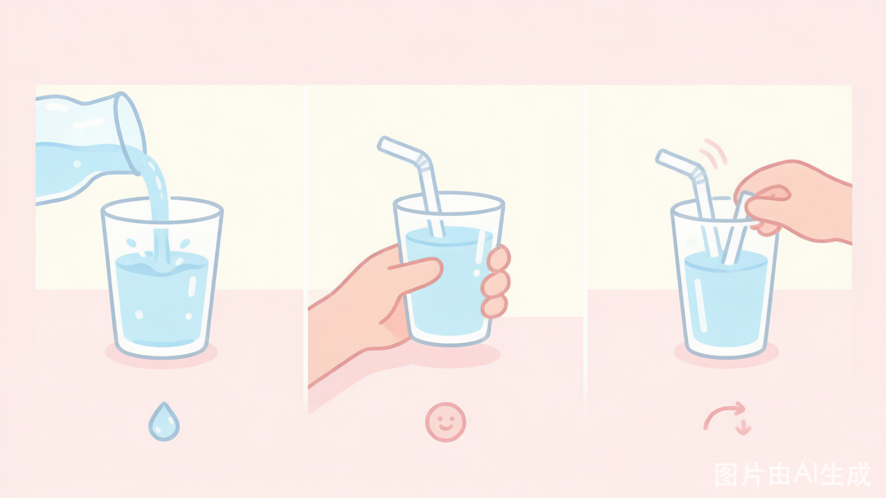

从文件中读取数据，让程序"看到"硬盘上的内容
""
上节课我们把 5 位同学的信息写进了 students.txt。
现在辅导员要查王五的手机号——文件就在那里，怎么把内容读出来？
# 回顾：上节课写文件的3行代码 f = open(r"D:\students.txt", "w") f.write("2024001 张三 13800138000\n") f.close()
| 操作 | 指针位置变化 | 类比 |
|---|---|---|
| open() | 指向开头（第一个字符前） | 📖 翻开书，手指放在第一个字 |
| read() | 移到末尾 | 📖 一口气读完，手指到最后一行 |
| read(n) | 往后移 n 个字符 | 📖 读了 n 个字，手指跟着移 n 格 |
| 末尾再读 | 不动，返回 "" | 📖 读完了再往后翻，没了！ |
💡 就像在书上用手指跟着文字一行行读——从第一个字开始，读完往后移，读到最后再往后，什么都没有了，返回 ""。
辅导员把签到文件一次性全打印出来 → f.read() 最方便
# 写文件（3行，准备数据） f = open(r"D:\hello.txt", "w") f.write("Hello!\nPython!") f.close() def read_file(): f = None try: f = open(r"D:\hello.txt", "r") content = f.read() # 读取全部内容，返回一个字符串 print(content) print("字符串长度：", len(content)) except Exception as e: print("读取失败：", e) finally: if f: f.close() read_file()
输出：Hello! Python! 字符串长度：14（\n 占1个字符）
班长检查作业，每次先看前几个字判断对不对 → read(n) 每次只读 n 个字符
# 写文件 f = open(r"D:\hello.txt", "w") f.write("Hello!\nPython!") f.close() def read_file(): f = None try: f = open(r"D:\hello.txt", "r") part1 = f.read(3) print("前3个字符：", part1, " 长度：", len(part1)) part2 = f.read(4) print("再读4个字符：", part2, " 长度：", len(part2)) rest = f.read(999) # 超过剩余长度，只返回剩余内容 print("剩余内容：", rest, " 长度：", len(rest)) empty = f.read(5) # 指针已到末尾，返回空串 print("末尾再读：", repr(empty), " 长度：", len(empty)) except Exception as e: print("读取失败：", e) finally: if f: f.close() read_file()
⚠️ read(999) 超过剩余字符数不报错，只返回剩余内容；指针到末尾后再读，返回 ""，len() 为 0。
文件内容："Hello!\nPython!"（共14个字符），点击"下一步"观察指针变化 ↓
老师在线批改作文，逐字检查 → read(1) 每次读1个字符
# 写文件 f = open(r"D:\hello.txt", "w") f.write("Hello!\nPython!") f.close() def read_file(): f = None try: f = open(r"D:\hello.txt", "r") char = f.read(1) while char: # char 为空串 "" 时循环结束 print(char, end="") char = f.read(1) except Exception as e: print("读取失败：", e) finally: if f: f.close() read_file()
💡 while char: —— 当 char 为空串 "" 时，条件为 False，循环自动结束。
请找出下面代码的 2 处错误：
f = open(r"D:\hello.txt", "r") content = f.read() print(content) # 想再读一次 content2 = f.read() print("第二次读取：", content2)
值日生逐行核对宿舍卫生记录，念一行记一行 → readline() 每次只读一行
# 写文件 f = open(r"D:\hello.txt", "w") f.write("Hello!\nPython!") f.close() def read_file(): f = None try: f = open(r"D:\hello.txt", "r") result = "" line = f.readline() while line: # line 为 "" 时循环结束 result = result + line line = f.readline() print(result) except Exception as e: print("读取失败：", e) finally: if f: f.close() read_file()
💡 先把所有行拼接到 result，最后统一 print(result) 输出；readline() 每行末尾含 \n。
辅导员拿到全班花名册，一次全存到程序里 → readlines() 一次性读进列表
# 写文件 f = open(r"D:\hello.txt", "w") f.write("Hello!\nPython!") f.close() def read_file(): f = None try: f = open(r"D:\hello.txt", "r") lines = f.readlines() # 返回列表，每个元素是一行（含\n） print(f"共读取 {len(lines)} 行") print(lines) # 直接打印列表，可看到每行末尾有\n for line in lines: print(line, end="") except Exception as e: print("读取失败：", e) finally: if f: f.close() read_file()
输出：共读取 2 行 ['Hello!\n', 'Python!'] Hello! Python!
| 方法 | 返回类型 | 一次读多少 | 末尾判断 | 适合场景 |
|---|---|---|---|---|
| read() | 字符串 | 全部内容 | 返回 "" | 文件较小，一次性处理 |
| read(n) | 字符串 | n 个字符 | 返回 "" | 逐字符/分段读 |
| readline() | 字符串 | 一行（含 \n） | 返回 "" | 逐行处理 |
| readlines() | 列表 | 全部行（每行含 \n） | 列表为空 | 对所有行做集合操作 |
🔑 共同规律：读到文件末尾都返回空字符串 ""（readlines 返回空列表 []），不会报错！

# 上节课写入的 students.txt
学号 姓名 手机号
-----------------------------------
2024001 张三 13800138000
2024002 李四 13900139000
2024003 王五 15000150000
2024004 赵六 18600186000
2024005 孙七 13700137000
❓ 为什么这里要 strip("\n")？
因为要对每行做 split() 拆字段——如果行末带着 \n，拆出的最后一个字段也带 \n，数据就脏了！
✅ 所以：处理真实数据时，先 strip("\n") 再 split()
def read_students(): f = None try: f = open(r"D:\students.txt", "r") lines = f.readlines() print("===== 学生信息 =====") for line in lines: line = line.strip("\n") # 去掉每行末尾的换行符 print(line) print(f"共 {len(lines)} 条记录") except Exception as e: print("读取失败：", e) finally: if f: f.close() read_students()
strip("\n") 只去掉 \n；strip() 不加参数可去掉首尾所有空白，更常用。
逐行读取，遇到分隔线直接跳过
def read_students(): f = None try: f = open(r"D:\students.txt", "r") line = f.readline() while line: line = line.strip("\n") if line and not line.startswith("-"): # 跳过分隔线 print(line) line = f.readline() except Exception as e: print("读取失败：", e) finally: if f: f.close() read_students()
startswith("-") 判断行是否以 - 开头（分隔线），是则跳过。
def read_students(): """解析 students.txt""" f = None students = [] try: f = open(r"D:\students.txt", "r") lines = f.readlines() for line in lines: line = line.strip("\n") if line.startswith("学号") or \ line.startswith("-") or \ line == "": continue parts = line.split() if len(parts) >= 3: students.append({ "id": parts[0], "name": parts[1], "phone": parts[2] }) except Exception as e: print("读取失败：", e) finally: if f: f.close() return students
def query_student(students, target_name): """按姓名查询手机号""" for s in students: if s["name"] == target_name: print(f"找到了！{target_name}的手机号" f"是：{s['phone']}") return print(f"未找到：{target_name}") # 主程序 students = read_students() for s in students: print(f"学号：{s['id']} " f"姓名：{s['name']} " f"手机：{s['phone']}") print(f"共 {len(students)} 名学生") query_student(students, "王五")
🔑 流程：strip("\n") → split() → 存字典 → 按姓名检索。读取和查询拆成两个函数，职责分离。
| 方法 | 语法 | 返回值 | 注意事项 |
|---|---|---|---|
| read() | f.read() | 全部内容字符串 | 末尾再读返回 "" |
| read(n) | f.read(10) | 前n个字符 | 超出不报错；len() 查长度 |
| readline() | f.readline() | 一行（含 \n） | 末尾返回 "" |
| readlines() | f.readlines() | 所有行的列表 | 处理数据时需 strip |
📝 核心口诀：
读文件用 "r" 模式；位置指针从头开始，读多少移多少，到末尾返回 ""；
处理真实数据时，先 strip("\n") 再 split()；打开放 try，关闭放 finally！